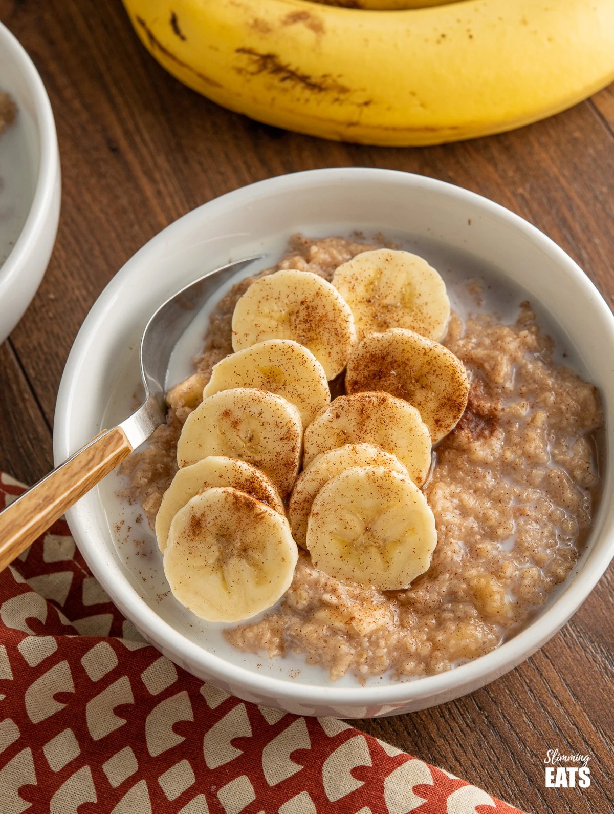

Oatmeal

Description
This delicious oatmeal recipe will give you something to look forward
to in the morning. It will certainly fill you up and it is a healthy start
to your day.
Ingredients
- 1 cup of milk
- 1 banana
- 1/2 green apple
- 1 tablespoon of peanut butter (or almond butter)
- 1/2 cup of oats
- 1 teaspoon of cinnamon
- pinch of salt
Steps
- Place oats in pot
- Pour milk in with the oats
- Set stove to medium heat and place pot
- Put in tablespoon of peanut butter
- While the oatmeal is heating up, slice your apple (into squares) and banana (into slices)
- Once you start hearing your oatmeal bubble up, mix peanut butter
- Wait until the oatmeal is your preferred texture (add more milk if needed)
- Remove pot from stove
- Add your cut apple and sliced banana on top
- Sprinkle cinnamon on top